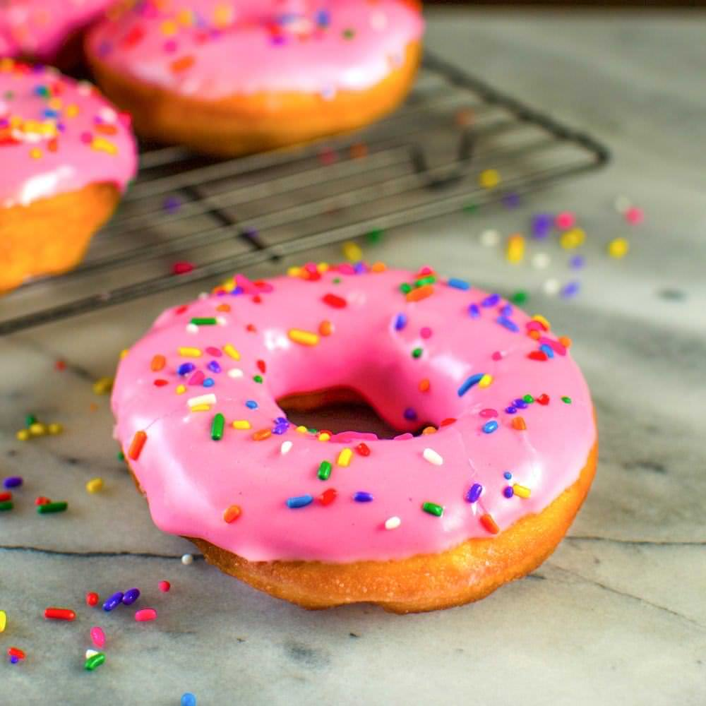

FOODS
Top 5 Favorites
Another American phrase, “for Mom and apple pie” became famous during World War II, when this was given as the answer by soldiers when asked why they were heading off to war. This, in turn, likely transformed into apple pie being known as a symbol for America.
“America's favorite food,” the history of the hamburger is filled with mythology. While the inspiration for the hamburger came from Hamburg, the sandwich concept was invented much later. During the 19th century, Hamburger became famous for their beef, from cows raised in the regional countryside
The Bagel is a bread product originating in the Jewish communities of Poland. It is traditionally shaped by hand into the form of a ring from yeasted wheat dough, roughly hand-sized, that is first boiled for a short time in water and then baked.
 Pizza became as popular
as it did in part because of the sheer
number of Italian immigrants: they made up
4 million of the 20 million immigrants who came to the U.S.
between 1880 and 1920. With them, they brought their taste buds and pizza-making skills.
Pizza became as popular
as it did in part because of the sheer
number of Italian immigrants: they made up
4 million of the 20 million immigrants who came to the U.S.
between 1880 and 1920. With them, they brought their taste buds and pizza-making skills.
DESSERTS
Some of Americans favorite desserts
The first known recipe for brownies was published in the 1897 Sears, Roebuck Catalogue. The origin of the Brownie is thought to be American. It is classified as a bar cookie and is thought to derive its name from the brown color of the cookie.
he history of cake dates back to ancient times. The first cakes were very different from what we eat today. They were more bread-like and sweetened with honey.
 Donuts are one of the most popular foods of all time. They are sweet, delicious and you can eat them on the go. Donuts have been around for hundreds of years, however, their true origin & invention is debated as fried dough is not exclusive to a single culture.
 hey rose to prominence because they saved time and weren't
as likely to burn in hearth ovens. Muffin tins (called “gem pads”)
grew in popularity around the 20th century. Cupcakes either got their
names because they were made in cups or measured out by the cup originally.
hey rose to prominence because they saved time and weren't
as likely to burn in hearth ovens. Muffin tins (called “gem pads”)
grew in popularity around the 20th century. Cupcakes either got their
names because they were made in cups or measured out by the cup originally.
FACTS

The United States of America is also called the USA, US, United States or sometimes America. On July 4, 1776, the Declaration of Independence was issued, establishing the United States of America. The US is the 4th largest country in the world by land area and 3rd by population. On February 25, 2013, the estimated population of the US was 315,568,000. The US is a diverse country with a multicultural society.